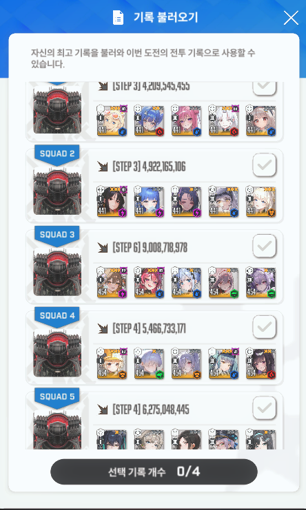

신데 아인이 없는 나도 강화 주간이면 어떻게든 비벼볼 수 있지 않을까라는 생각에 도전했다가 성공
분배댐 버프 받은 흑련은 신이야...
원본: https://gall.dcinside.com/mgallery/board/view/?id=gov&no=6084610
백업 시각:

신데 아인이 없는 나도 강화 주간이면 어떻게든 비벼볼 수 있지 않을까라는 생각에 도전했다가 성공
분배댐 버프 받은 흑련은 신이야...